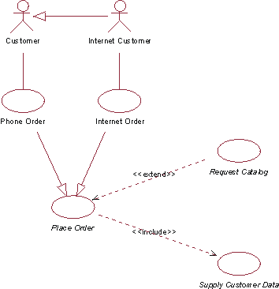
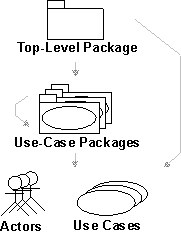

| Guideline: Use-Case Model |
 |
|
| Related Elements |
|---|
How the Use-Case Model EvolvesUse the requirements of stakeholders and potential users as vital information to help you find both the actors and use cases. As you discover them, briefly describe the use cases and the actors. Before you describe the use cases in detail, the use-case model should be reviewed by the stakeholders to verify that you have found all of the use cases and actors and that, together, they can provide what the stakeholder wants. For more information on finding actors and use cases see Guideline: Find and Outline Actors and Use Cases. When you have found the actors and use cases, describe the flow of events for each use case in detail. These descriptions show how the system interacts with the actors and what the system does in each case. In an iterative development environment, you will select particular scenarios of the use cases, or parts of a scenario, to be detailed in each iteration. For more information on detailing use cases and scenarios, see Guideline: Detail Use Cases and Scenarios. Finally, the completed use-case model (including the descriptions of use cases) is reviewed, and the developers and stakeholders use it to agree on what the system should do. Avoiding Functional DecompositionIt is not uncommon that the use-case model degenerates into a functional decomposition of the system. To avoid this, watch for the following symptoms:
To avoid functional decomposition, make sure that the use-case model helps answer these kinds of questions:
Nonfunctional RequirementsIt is quite easy to see that use cases are a very good way of capturing functional requirements on a system. But what about the nonfunctional requirements? What are they, and where are they captured? Usability, reliability, performance, and supportability requirements are often categorized as nonfunctional requirements (also see Guideline: Supporting Requirements). They often specify statutory or regulatory requirements that you must comply with, by law. They can specify design constraints, such as the operating system used, the platform environment, interface requirements, business rules, or any application standards that apply. In general, you can say that any requirement that does not allow for more than one design option should be regarded as a design constraint. Many nonfunctional requirements apply to an individual use case and are captured within the flow of events of that use case or as a special requirement of that use case (see Concept: Use Case). Example In a recycling machine system, a nonfunctional requirement specific to the Return Deposit Items use case could be:
Often, the nonfunctional requirements apply to the whole system. Such requirements are captured in the Artifact: Supporting Requirements. Example In the recycling machine system, a nonfunctional requirement that applies to the whole system could be:
Structuring the Use-Case ModelThere are three main reasons for structuring the use-case model:
Structuring is not the first thing you do, however. There is no point in structuring the use cases until you know a bit more about their behavior than a one-sentence description. You should at least have established a step-by-step outline for the flow of events of the use case to make sure that your decisions are based on an accurate understanding of the behavior. To structure the use cases, you use three kinds of relationships. You will use these relationships to factor out pieces of use cases that can be reused in other use cases, or that are specializations or options for the use case. The use case that represents the modification is called the addition use case. The use case that is modified is called the base use case.
You can use actor generalization to show how actors are specializations of one another. For more information on actor generalization, see Concept: Use-Case Model. Example Consider part of the use-case model for an order management system. It is useful to separate an ordinary Customer from an Internet Customer, because they have slightly different properties. However, given that Internet Customer does exhibit all properties of a Customer, you can say that Internet Customer is a specialization of Customer, which you indicate with an actor generalization. The concrete use cases in this diagram are Telephone Order (initiated by the Customer actor) and Internet Order (initiated by Internet Customer). These use cases are both variations of the more general Place Order use case, which in this example is abstract. The Request Catalog use case represents an optional segment of behavior that is not part of the primary purpose of Place Order. It has been factored out to an abstract use case to simplify the Place Order use case. The Supply Customer Data use case represents a segment of behavior that was also factored out, because it is a separate function, and only the result affects the Place Order use case. The Supply Customer Data use case can also be reused in other use cases. Both Request Catalog and Supply Customer Data are abstract in this example. Figure 1 is a use-case diagram that shows part of the use-case model for an order management system.  Figure 1. Use-case diagram of an order management system The following table shows a more detailed comparison of the three different use-case relationships: Table 1: Comparison of different use-case relationships
Another aspect of organizing the use-case model for easier understanding is grouping the use cases into packages. The use-case model can be organized as a hierarchy of use-case packages. For more information on use-case packages, see Concept: Use-Case Model. Figure 2 shows the use-case model hierarchy. Arrows indicate possible ownership.  Figure 2. Use-case hierarchy Relationship Between Use Cases and ActorsRunning each use case includes communication with one or more actors. A use-case instance is always started by an actor asking the system to do something. This implies that every use case should have communicates-associations with actors. The reason for this rule is to enforce that the system provides only the functionality that users need and nothing else. Having use cases that no one requests is an indication that something is wrong in the use-case model or in the requirements. However, there are some exceptions to this rule:
The Survey DescriptionThe survey description of the use-case model should:
Example Following is a sample survey description of the recycling machine's use-case model:
|
This program and the accompanying materials are made available under the View copyright information here: OpenUP Copyright |